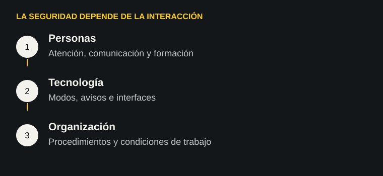

La dirección del proyecto
Misión y visión
Investigar, comunicar y aprender para fortalecer una cultura de seguridad aérea.

Misión
Comunicar información fundamentada y accesible que permita entender las medidas de prevención y los límites de los sistemas de protección en la aviación civil.
Visión
Contribuir a una comunidad estudiantil que consulte fuentes confiables, interprete críticamente la información y valore la responsabilidad profesional en el sector aeronáutico.